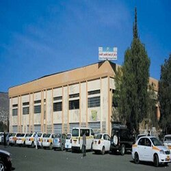
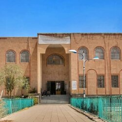
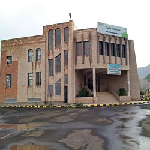

|
- مركز الترجمةمركز خدمات المجتمع للترجمة وتعليم اللغات (CCTLT) هو أحد أهم المراكز العلمية والخدمية التابعة لجامعة صنعاء، يقدم مجموعة من البرامج الأكاديمية والمهنية المتميزة في مجال الترجمة وتعليم اللغات ويضم كوادر يمنية مؤهلة ومتخصصة. ظهرت فكرة إنشاء المركز في عام 1997م عند بداية تأسيس كلية اللغات. بعد ذلك، تم إستحداث وحدة تدريس دورات اللغة الإنجليزية في إطار قسم اللغة الإنجليزية بالكلية وتم تطوير هذه الوحدة إلى مركز لغات، وبناء على ذلك تم إنشاء المركز بموجب قرار رئيس الجامعة رقم (414) للعام 2004م لتلبية احتياجات المجتمع في خدمات الترجمة وتعليم اللغات الأجنبية، وتم إعتماد اللائحة الداخلية للمركز بمجلس الجامعة في جلسته (دورتي سبتمبر- أكتوبر) المنعقدة بتاريخ 17/11/ 2007م. اعرف المزيدمركز المكفوفينانشئ المركز الثقافي للمكفوفين بالشراكة بين جامعة صنعاء وجمعية الامان لرعاية الكفيفات بقرار رئيس الجامعة رقم435 لسنة 2010م بتاريخ 24/7/2010م ليكون رافدا ومعيناً للطلاب المكفوفين الملتحقين بالتعليم الجامعي .. اعرف المزيدمركز التنمية البشريةمركز المياه والبيئة هو مركز أكاديمي وبحثي في مجال المياه والبيئة في الجمهورية اليمنية بجامعة صنعاء. الدراسة في هذا المركز يوفر معلومات عالية الجودة مع التركيز على مشاكل المياه على المستوى المحلي والدولي. هو أول مركز تعليمي للمياه في المنطقة يتبنى نهج الإدارة المتكاملة لموارد المياه. نضمن لك التوجيه المتميز للحصول على أعلى الكفاءات والمهارات والمعرفة المطلوبة لحياتك المهنية الحالية والمستقبلية. . اعرف المزيدمن المدونة12.10.2023
نبذة عن جامعة صنعاءتعتبر جامعة صنعاء مؤسسة تعليمية مرموقة في اليمن وتلعب دورًا هامًا في تطوير الموارد البشرية وتعزيز التعليم والبحث في البلاد. آراء العملاءجامعة صنعاء هي إحدى الجامعات العربية الرائدة وتعتبر أقدم جامعة في اليمن. تأسست جامعة صنعاء في عام 1970 وتقع في العاصمة اليمنية صنعاء تعتبر جامعة صنعاء مؤسسة تعليمية شاملة تضم العديد من الكليات والمعاهد التي تقدم تعليماً عالياً في مختلف التخصصات الأكاديمية. تتألف الجامعة من عدة كليات بما في ذلك كلية العلوم، كلية الهندسة، كلية الطب، كلية الطب البيطري، كلية الآداب، كلية التجارة والاقتصاد، كلية الحقوق، وغيرها من الكليات. . جامعة صنعاء -تواصل معنا!ا لقناه الرسميه تلجرام لجامعه الرجاء الظغط فوق الرابط للمزيد من المعلومات حول جامعة صنعاء .
|
مــــواقـــع اخــــبــــاريـــة لجامعة صنعاء
| |